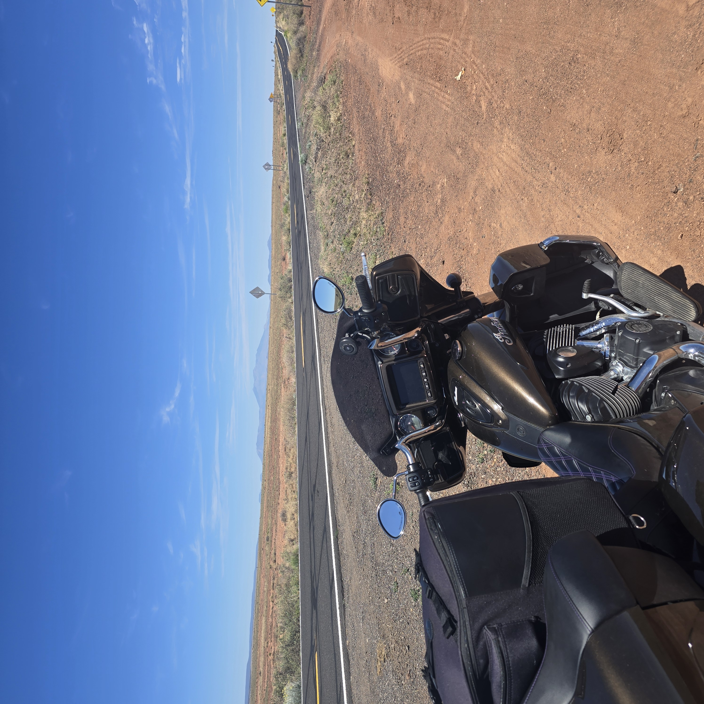
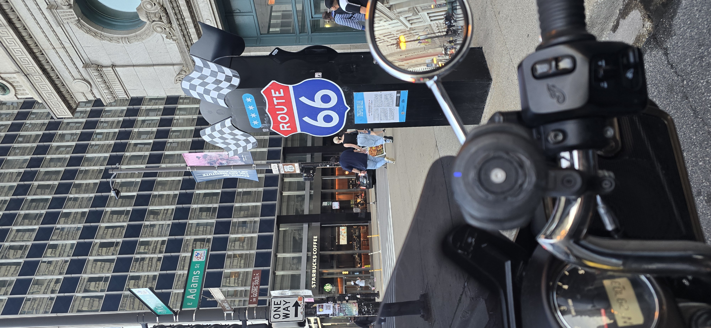
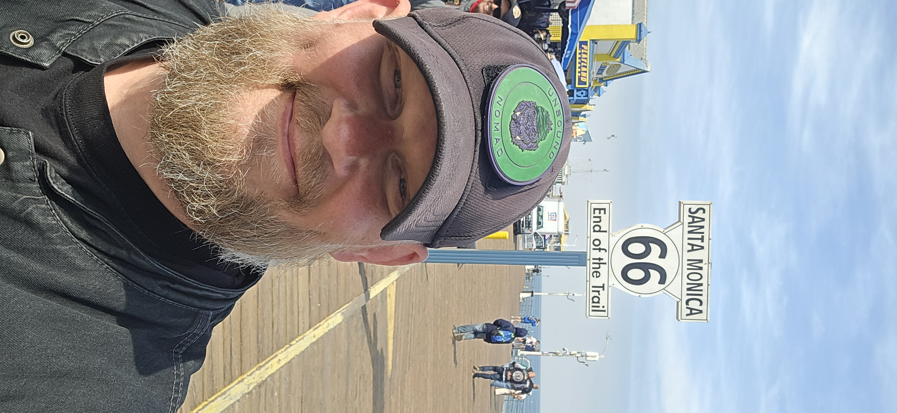
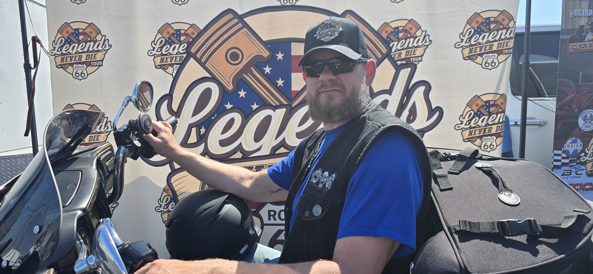
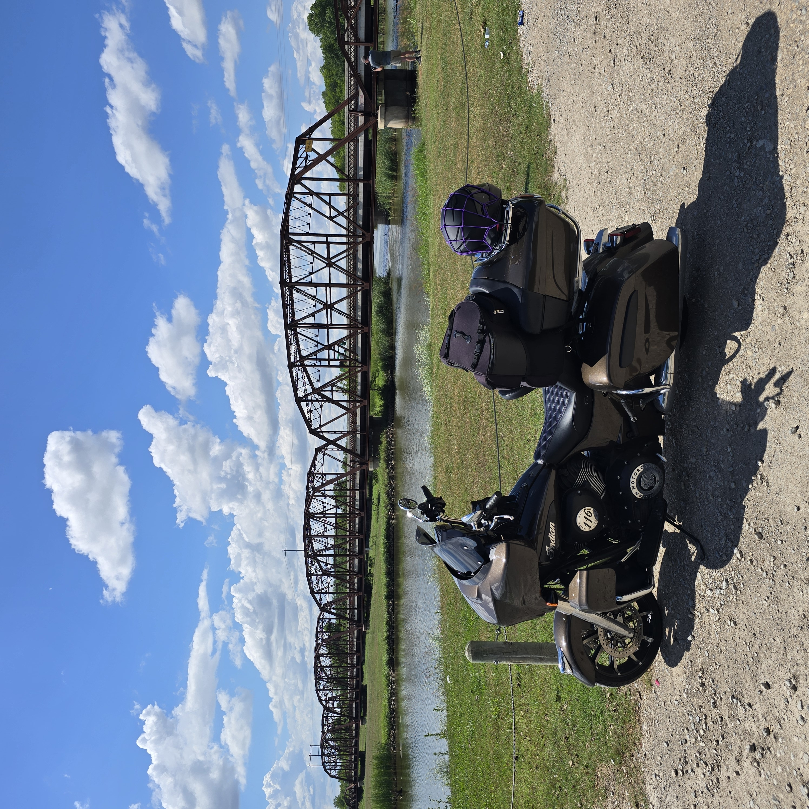
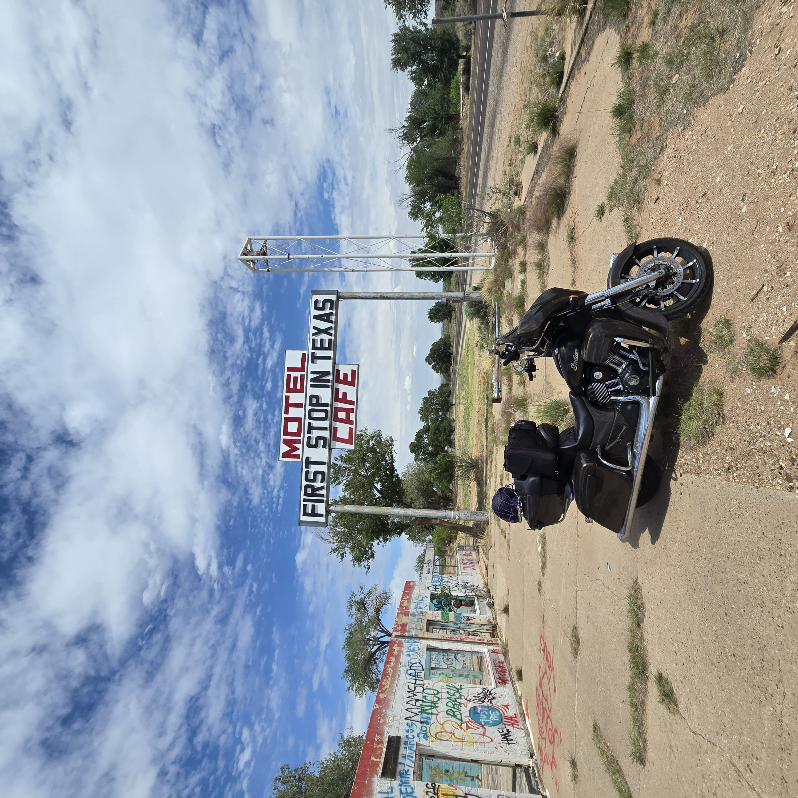

26 Days, 6,000 Miles: What the Road Taught Me
Posted on Tue 28 July 2026 in Rides

I pulled into home around 5 in the afternoon on June 19th.
Twenty-six days. 6,175 miles on the odometer. Delaware, Ohio to Huntington Beach, California and back, with a week in southern Colorado and two days in Dodge City and the better part of a continent in between. I cut the engine and sat on the bike for a minute before getting off. Not for any particular reason. It just seemed like the right thing to do.
The trip was over. Everything I'd learned from it was just starting.
The Numbers
There's a version of this post that's just the numbers, and they're worth saying once.
26 days on the road. 6,175 miles. Roughly 237 miles per riding day. Eight states. One ocean. Two mountain passes. A national historic site, a week-long motorcycle rally, a rider development course, a product launch, countless fuel stops and hotel rooms and long stretches of nothing but pavement and sky.
The Legends Never Die Tour - the Route 66 westbound leg from Chicago to Santa Monica - was 2,400 miles of the most historically significant road in America. The return route through the Southwest added Monument Valley, Dodge City, the high desert of Arizona and Colorado, and roads I hadn't planned on and won't forget.
The numbers are real. But they're not the point.
What I Went Looking For
I didn't have a single clean reason for doing this trip.
Some of it was the road itself - Route 66 had been on the list for years, and the opportunity was there, and some things you stop waiting for and just do. Some of it was the business - Broken Wings needed to be launched somewhere meaningful, and a motorcycle rally in Colorado felt right. Some of it was something harder to name. A need to cover ground. To find out what I was capable of when the only obligation was to keep moving.
Some of it was the accident.
I went down a year ago. I came back to riding on the other side of it changed in ways I'm still working out - more deliberate, more aware, more committed to this life in a way I can't fully explain to someone who hasn't had a version of that experience. The trip wasn't about the accident. But it was shaped by what the accident made me understand about why the road matters to me and what I'd lose if I stopped riding it.

What I Found
I found that I'm more capable on a motorcycle than I knew before I started.
Paul Carroll's rider development course in Durango was confirmation. Not of perfection - I have real work to do, and the course showed me exactly where. But confirmation that the baseline is solid, that the skills are there, that I can cover serious distance in serious conditions and arrive on the other side with the bike and myself intact. That matters.
I found that long solo travel is a specific kind of solitude that's different from being alone at home. You're alone but constantly moving through the world. Every stop is a potential conversation. Every mile is a choice you're making with your body and your machine. The isolation isn't passive. It's active. You have to choose to be present to it or you miss everything.
I found that the people who make the road worth remembering are rarely the ones you'd expect. Not the famous stops or the landmark attractions - though some of those were genuinely extraordinary. The people. Olivia, who rode along with me and forged one of the most memorable days of the trip. Doug in the casino parking lot who pulled up on his bike and talked for a few minutes like we'd known each other for years. Cupcake, who organizes Run for the Wall and guides tours and has more road behind her than most people will ever put down. Paul Carroll, who spent a day making eight riders better at something that might save their lives.
I found that Route 66 is real. Not just as a road but as an idea - the version of America that chose motion, that believed the next horizon was worth chasing, that built a culture around the act of going. Riding it end to end doesn't just cover distance. It covers something deeper.


What Came Home With Me
The trip ended when I turned the bike off at home. What it produced didn't.
Broken Wings has its first customer, its first sale, and a launch story that happened in a casino parking lot in the dark. The infrastructure is being built now - proper shipping, stronger distribution, a campaign that does justice to what the patch represents. The road gave me the story. The work now is building the reach to tell it to the people it's for.
The Unbound Nomad is clearer to me now than it was before I left. Twenty-six days of running a business from out of a tour pack teaches you what the business actually is. What it's not is the unfocused version of itself that exists when you have unlimited time and no urgency. What it is - guided adventure, rider development, products that mean something to people who ride - those things got sharper out there.
I came home with six thousand miles of content, a head full of conversations, a list of things that need to be built, and a certainty about this life that I didn't have in quite the same way before I left.

What the Road Teaches
Six thousand miles is enough miles to learn a few things that the shorter trips don't show you.
It teaches you that comfort is overrated and discomfort is survivable. The hot days in the desert, the rain through Missouri and Oklahoma, the headwinds on the plains - none of it stopped anything. You ride through it. Then it's behind you. Then you stop somewhere and the evening is perfect and you've completely forgotten that the afternoon was hard.
It teaches you patience with your own limitations. There are days when the miles feel like work. There are moments when you're tired and the next waypoint feels far away and you just have to cover the distance in front of you. You learn to do that. You learn that the distance gets covered regardless, so you might as well be present to it.
It teaches you that strangers are mostly good, and that a motorcycle is the best conversation starter in the world, and that the version of America you encounter on the road is more generous and more interesting than the one you encounter anywhere else.
It teaches you that the life you build around riding - the business, the community, the products, the writing - has to be as good as the riding itself. Because riders know the difference between something built for riders and something built for money, and they know it immediately.
And it teaches you, if you let it, that the reasons you ride are worth protecting. The accident was a door I could have walked away from. I walked back through it instead. Twenty-six days and six thousand miles later, I know that was the right call.



What's Next
The road doesn't end. It just changes shape.
There are rides already forming in my head. Places the last trip pointed at but didn't reach. People I met out there who said you should come ride this and meant it. The Broken Wings campaign has ground to cover. The Unbound Nomad has adventures to plan and riders to bring along for them.
Arriving home - engine off, sitting still for the first time in nearly a month - was an ending. But it was the kind of ending that's really a pause. A moment to take stock of what the road gave you before you go back out and ask it for more.
I'll be asking.
This ride was a 26-day motorcycle journey from Delaware, Ohio to Huntington Beach, California and back. This is Part 6 of 6. Start from the beginning with Part 1.